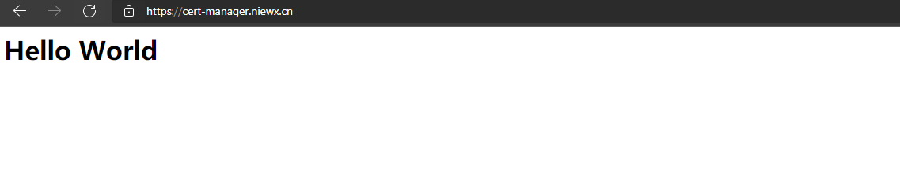

随着HTTPS不断普及，大多数网站开始由HTTP升级到HTTPS。使用HTTPS需要向权威机构申请证书，并且需要付出一定的成本，如果需求数量多，则开支也相对增加。cert-manager 是 Kubernetes 上的全能证书管理工具，支持利用 cert-manager 基于 ACME 协议与 Let’s Encrypt 签发免费证书并为证书自动续期，实现永久免费使用证书。
cert-manager支持许多dns provider，但不支持国内的dnspod，不过cert-manager提供了Webhook机制来扩展provider，社区也有dnspod的provider实现，下面我们在k8s中通过cert-manager和cert-manager-webhook-dnspod来为域名签发免费证书，
环境配置
- k8s集群：这里我们用的腾讯云eks集群
- 域名：腾讯云购买的域名，并用dnspod进行解析
- dnspod-token：从https://console.dnspod.cn/account/token/apikey创建一个
- nginx-ingress：需要在k8s中部署nginx-ingress，后续配置ingress验证证书
集群已经部署了nginx-ingress并且支持helm3部署应用到集群。
安装部署cert-manager
首先我们安装cert-manager到集群中，执行下面的命令部署既可
1 | kubectl apply --validate=false -f https://raw.githubusercontent.com/TencentCloudContainerTeam/manifest/master/cert-manager.yaml |
安装cert-manager-webhook-dnspod
cert-manager-webhook-dnspod通过helm安装，首先我们配置下dnspod-webhook的配置文件。
1 | groupName: cert-manager.io |
这里groupname可以和我的保持一致，secret是之前从dnspod上创建获取，clusterIssuer设置为true，邮箱填写自己既可。下面我们helm安装下
1 |
Certificate签发证书
创建一个Certificate来给我们的域名签发免费证书
1 | apiVersion: cert-manager.io/v1 |
这里cert-manager-webhook-dnspod-cluster-issuer是自动生成的，dnsname需要保证填写的域名是dnspod管理的，最终生成的证书会在cert-manager-crt-secret这个secret。
这里创建之后，等certificate的状态是true，则签发成功，如果为false，需要describe看下报错是什么原因。
1 | [eks@VM-0-13-centos cert]$ kubectl get certificate |
创建ingress使用免费签发证书
这里已经预先部署了一个简单go的demo服务
1 | [eks@VM-0-13-centos cert]$ kubectl get all | grep go |
然后我们用ingress绑定域名cert-manager.niewx.cn到后端的go服务提供访问
1 | apiVersion: networking.k8s.io/v1beta1 |
ingress创建好之后，浏览器用https访问域名正常则说明证书签发成功


欢迎访问 Vashon 的博客，博客和文章在完善中，请大家耐心等待。 若有问题或者有好的建议欢迎留言，笔者看到之后会及时回复。 评论点赞需要github账号登录，如果没有账号的话请点击 github 注册， 谢谢 !

...
...